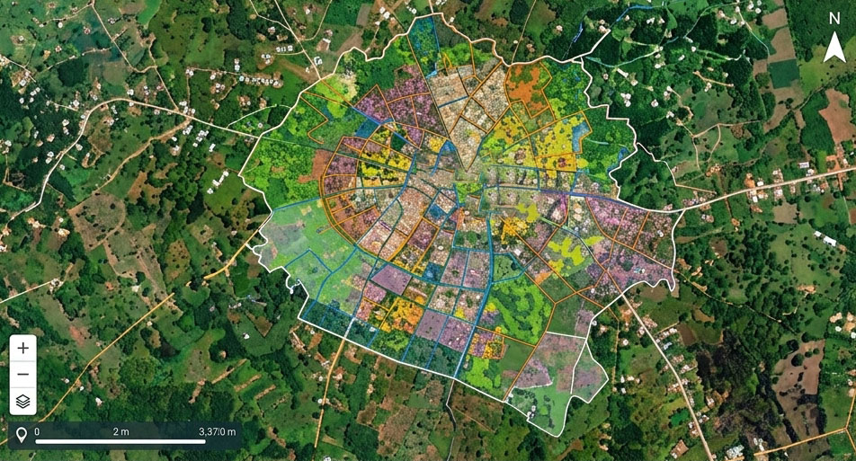
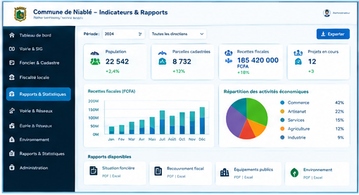
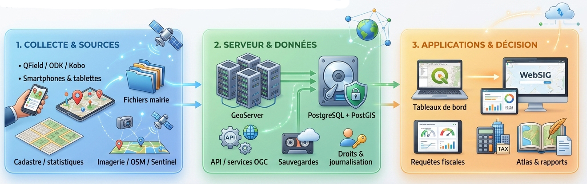
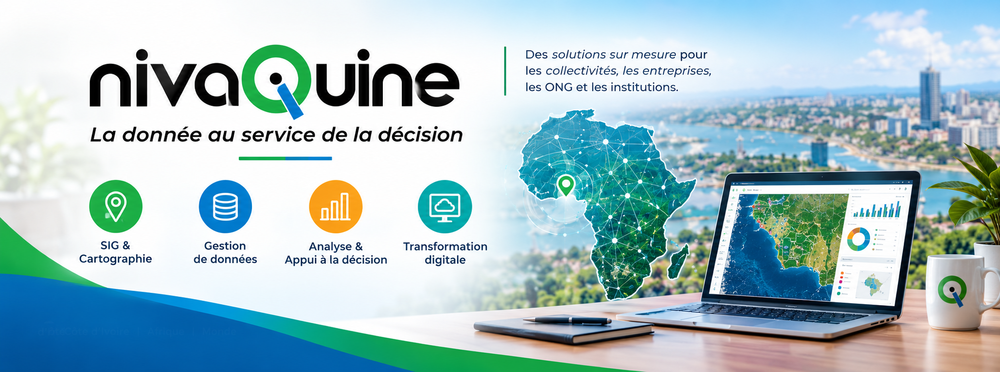

Gestion de l'information
Organisation, structuration, qualité et valorisation de vos données et de vos fonds documentaires.
- Gouvernance et référentiels de données
- Conception et nettoyage de bases
- Documentation et capitalisation des savoirs

Conseil · Gestion de l'information · SIG · Données · Numérique
NIVAQUINE accompagne les organisations en Côte d'Ivoire, en Afrique de l'Ouest et à l'international pour structurer, analyser et valoriser leurs informations grâce à des solutions numériques durables.

Côte d'Ivoire · Afrique de l'Ouest · International
À propos
NIVAQUINE – Digital Solutions est un cabinet de conseil spécialisé dans la gestion de l'information, les systèmes d'information géographique (SIG), l'analyse de données et la transformation numérique. Nous aidons les organisations publiques, privées et non lucratives à faire de leurs données un levier fiable de pilotage et de décision.
Notre mission
Structurer, analyser et valoriser l'information pour que chaque décision repose sur des données fiables, accessibles et restituées avec clarté.
Écouter
Comprendre votre contexte, vos contraintes et vos objectifs.
Structurer
Organiser vos informations et construire des outils adaptés.
Autonomiser
Former vos équipes pour une adoption durable.
Nos expertises
De la structuration de l'information au déploiement numérique, nous couvrons toute la chaîne de valeur de la donnée.
Organisation, structuration, qualité et valorisation de vos données et de vos fonds documentaires.
Collecte de données spatiales, cartographie et analyse géographique pour comprendre et agir sur les territoires.
Transformation des données brutes en indicateurs lisibles, en rapports et en tableaux de bord décisionnels.
Digitalisation des processus, déploiement d'outils adaptés et accompagnement des équipes dans le changement.
Nos solutions
Chaque mission allie rigueur méthodologique et technologie adaptée. Nous livrons des outils opérationnels, documentés et maintenables.

Diagnostic, schéma directeur de l'information, feuilles de route et appui à la conduite de vos projets.
Applications sur mesure : portails de données, outils de gestion interne, systèmes de collecte et de reporting.
Plateformes partagées et sécurisées pour centraliser, échanger et valoriser l'information de votre organisation.
Cartes interactives, atlas web et analyses spatiales pour rendre lisibles vos territoires.
Indicateurs en temps réel, visualisations et alertes pour piloter vos activités avec confiance.
Nos secteurs d'intervention
Basés en Côte d'Ivoire, nous accompagnons nos clients en Afrique de l'Ouest et à l'international, dans tous les secteurs où l'information constitue un actif stratégique.

Suivi de programmes, évaluation des besoins, reddition de comptes aux populations.
Suivi d'impact, cartographie des interventions, reporting bailleurs.
Aménagement du territoire, gestion foncière, tableaux de bord des données publiques.
Optimisation commerciale, logistique, tableaux de bord et stratégie pilotée par la donnée.
Mesure de l'impact, gestion des connaissances, plaidoyer fondé sur les preuves.
Parlons-en : notre méthode s'adapte à tout contexte où l'information compte.
Nous contacterContact
Parlez-nous de vos besoins : nous revenons vers vous avec une première analyse de votre situation et une approche adaptée.